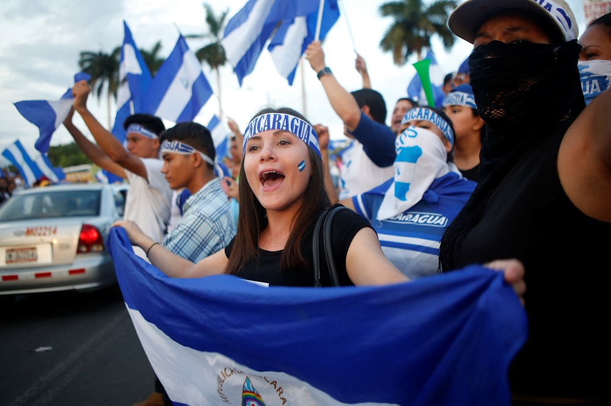
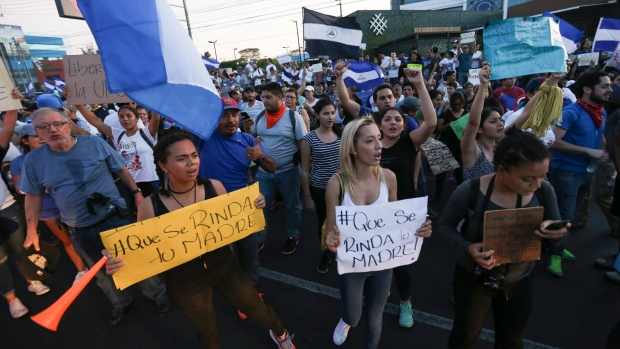

"For years, Nicaraguans seemed to tolerate the growing authoritarianism of President Daniel Ortega in exchange for stability and growth. That pact is now crumbling."



In April of 2018, the people of Nicaragua had enough. This was after another period of protest after the 2013 protests, but this time it escalated way more quickly. The 2018 protests were all started when Daniel Ortega's administration raised the income taxed while simultaneously cutting social security benefits. These protesters mostly consisted of university students, the elderly, and other activists. Ortega's organization, the Sandinistas, responded violently. Authorities used live ammunition and the Sandinista Youth created armed mobs. All in all, 26 people died at the initial protest.
The following day, the Vice President and First Lady made a speech calling the protesters small groups, small souls, toxic, full of hate, bent on the destruction of the country". This was paired with independent media censoring, arrests, and even more outrage. Several days later Ortega suspended the changes in social security, but the damage had already been done. The protests would no longer be about social security, but instead the violence, censorship, and tyranny in the country.
Protests did not stop for many months. The students announced they would continue the marches in a peaceful way. The Sandinistas continued to act violently. This pattern of protest and violent resposne went back and forth all the way in to the start of 2019 Meanwhile, the US, the UN, and many other businesses and countries tried to stop the violence. Ortega refused to back down, and while strong victories were made, the entire problem was not able to be solved.
It seems inevitable that Nicaragua cannot prosper with the Sandinista party oppressing them as much as they do. A new part needs to control the government, but that's easier said than done. The US won't and shouldn't take part in this because of two main reason. First, the US already has a broken trust with Sandinista opposition parties because of the Contra conflict. Second, US involvement in other countries notoriously makes them worse off than they started. The Nicaraguans cannot overthrow the government themselves because of lack of competitive weapons and a large number of impoverished citizens. They are simply unable to rise up on their own.
The best solution I can come up with is waiting until Ortega dies, and then acting on the temporary chaos that I predict will ensue. The protesters will need to abandon the peaceful nature that they held on to so dearly during their protests. As contradictory as it sounds, sometimes violence as response to violence is the only way toward peace.
After kicking the Sandinista party out of the government, the Nicaraguan people need to make a new government. They need to find all the loopholes that Ortega and the Sandinistas found and make sure they are no longer present. The people need to act together and share the power like a republic so that tyranny dies before it can grow. Sometimes starting from scratch is the only way, and Nicaragua could not be a better example.
Before the Sandinista's took power, the political party in charge was the Somoza Dynasty. They were considered a ruthless dictatorship, but they were still backed by the US as a non-communist stronghold. FDR said this concerning the Samozas in 1939, "Somoza (referring to the president) may be a son of a bitch, but he's our son of a bitch."
The Sandinistas were founded to directly oppose the Samozas in 1961. They were mostly backed by educated students who were aware of the corruption and human rights violation in the government at the time. It was during this founding period that Daniel Ortega entered the movement. In 1979 the Sandinistas took power by storming Managua, the capital. This left them in charge of a failing country with massive amounts of debt. The Sandinista rise to power only brought more problems. Corruption was still frequent, and the Sandinistas were very hostile to disagreement. They suspended news channels, silenced and jailed people, and kept opposition parties out of the government.
Many people were not happy about the Sandinista party, and so naturally another opposition movement happened. This movement was against the socialist principles that the Sandinista's implemented. They became backed by the US since we both opposed the supposed Marxist/socialist principles in the Nicaraguan government. They temporarily rose to power. This all came crashing down, though. The US found out that the Contras were giving money to Iran, an enemy of the US. This caused the US to stop supporting the Contras.
After the failure of the Contra movement, the Sandinistas regained control of the Nicaraguan government. They chose Daniel Ortega to lead them and he has been in power ever since 2008. He was able to find loopholes and bend the rules to effectively make certain the Sandinistas stayed in power.